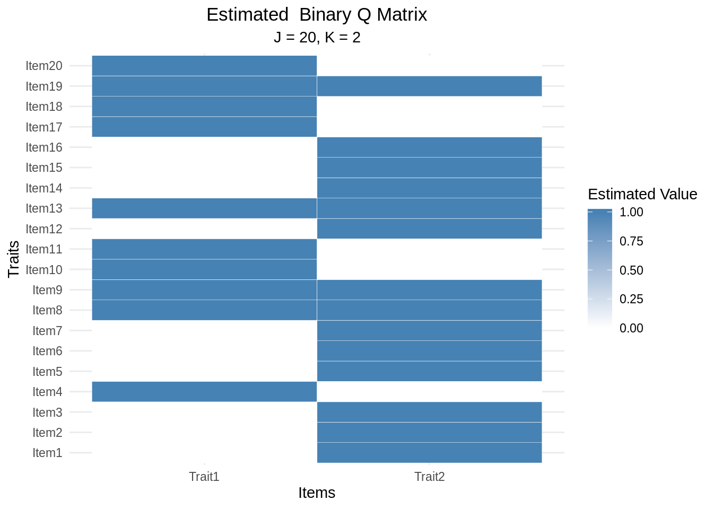
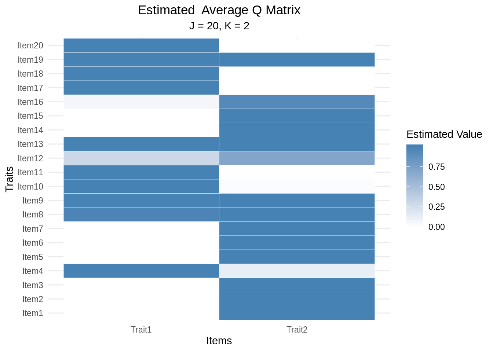
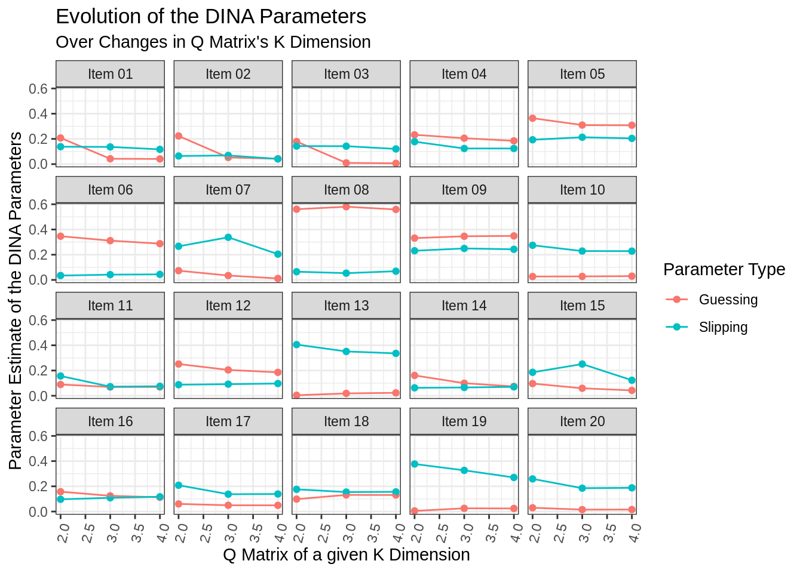
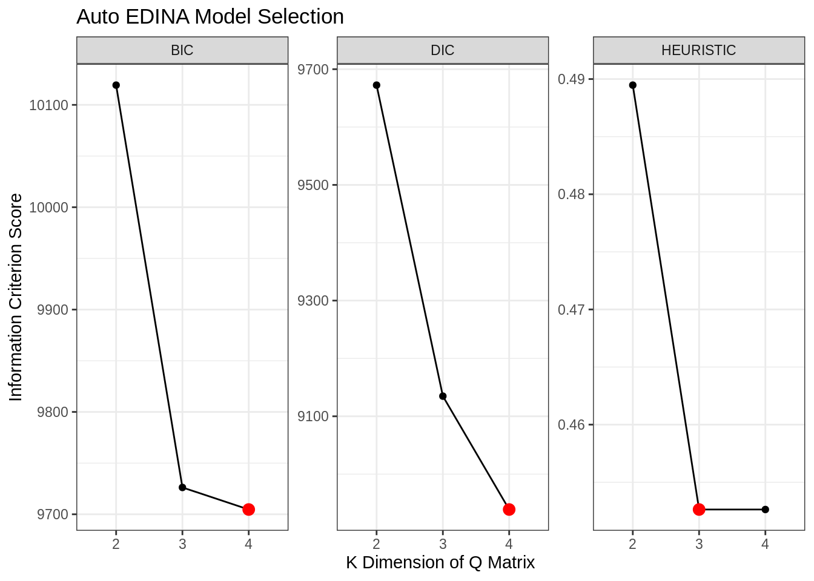

Chapter 3 EDINA: Exploratory Deterministic Input, Noisy “And” Gate
3.1 Methodology
3.2 Single Model Estimation
When working with a single \(K\) dimension, the easiest way to proceed is to use
the edina function. This function requires:
data: Item Matrixk: Number of Traits associated with the Q Matrix.burnin: Amount of iterations to discardchain_length: Amount of iterations to keep
Let’s take the fraction-subtraction data that we loaded earlier and perform
an estimation with it using k = 2. Please note it will take about 3 minutes
to complete.
3.2.1 Structure of EDINA
Underneath the edina_fractions_k2 variable is a wealth of information regarding
the model fit. This information can be used in subseqent analysis. To aide
in this endeavor, we’ve crafted a series of helper functions that will be
discussed next. In the interim, please feel free to look at the underlying
structure of edina_fractions_k2 using str().
## List of 15
## $ coefficients : num [1:20, 1:4] 0.0712 0.0757 0.027 0.2211 0.3048 ...
## ..- attr(*, "dimnames")=List of 2
## .. ..$ : chr [1:20] "Item1" "Item2" "Item3" "Item4" ...
## .. ..$ : chr [1:4] "Guessing" "SD(Guessing)" "Slipping" "SD(Slipping)"
## $ loglike_summed: num -93840906
## $ loglike_pmean : num -4671
## $ pi_classes : num [1:4, 1] 0.3858 0.141 0.0301 0.4431
## $ avg_q : num [1:20, 1:2] 0 0 0 1 0 ...
## ..- attr(*, "dimnames")=List of 2
## .. ..$ : chr [1:20] "Item1" "Item2" "Item3" "Item4" ...
## .. ..$ : chr [1:2] "Trait1" "Trait2"
## $ est_q : num [1:20, 1:2] 0 0 0 1 0 0 0 1 1 1 ...
## ..- attr(*, "dimnames")=List of 2
## .. ..$ : chr [1:20] "Item1" "Item2" "Item3" "Item4" ...
## .. ..$ : chr [1:2] "Trait1" "Trait2"
## $ or_tested : num [1:20, 1:20] 0 0 0 0 0 0 0 0 0 0 ...
## $ sample_or : num [1:20, 1:20] 0 0 0 0 0 0 0 0 0 0 ...
## $ n : int 536
## $ j : int 20
## $ k : int 2
## $ burnin : num 10000
## $ chain_length : num 20000
## $ timing : Named num [1:3] 62.282 0.015 62.3
## ..- attr(*, "names")= chr [1:3] "user.self" "sys.self" "elapsed"
## $ dataset_name : chr "items_fractions"
## - attr(*, "class")= chr "edina"The details on the return values contained in the EDINA model can be found in
?edina.
3.2.2 Extracting the Q Matrix
As the Q matrix is estimated, there are two ways to extract the Q matrix. The first way involves looking directly at the average and the second way involves looking at the dichotomous state of the Q matrix (default). The latter is constructed by treating element-wise entries with values greater than 0.5 as being 1 and values less than 0.5 as being 0.
Extracting the Q matrix from an estimated model can be done using
Let’s view both forms of the estimated Q Matrix for edina_fractions_k2
## Trait1 Trait2
## Item1 0.00000 1.00000
## Item2 0.00000 1.00000
## Item3 0.00000 1.00000
## Item4 1.00000 0.13255
## Item5 0.00000 1.00000
## Item6 0.00000 1.00000
## Item7 0.00000 1.00000
## Item8 0.97990 0.99595
## Item9 0.99420 0.99985
## Item10 1.00000 0.02235
## Item11 1.00000 0.00000
## Item12 0.29850 0.70215
## Item13 1.00000 1.00000
## Item14 0.00000 1.00000
## Item15 0.00000 1.00000
## Item16 0.06445 0.93745
## Item17 1.00000 0.00000
## Item18 1.00000 0.00005
## Item19 1.00000 0.99995
## Item20 1.00000 0.00000## Trait1 Trait2
## Item1 0 1
## Item2 0 1
## Item3 0 1
## Item4 1 0
## Item5 0 1
## Item6 0 1
## Item7 0 1
## Item8 1 1
## Item9 1 1
## Item10 1 0
## Item11 1 0
## Item12 0 1
## Item13 1 1
## Item14 0 1
## Item15 0 1
## Item16 0 1
## Item17 1 0
## Item18 1 0
## Item19 1 1
## Item20 1 0An alternative way to view the estimated Q matrix is to plot it on a graph.
Graphing a Q matrix is done using a heatmap to show areas strength of the
estimation for a given item and trait. The underlying graphs for ecdm are
constructed using the ggplot2 library and,
thus, can be further manipulated by adding new layers to the plot.
How does the average Q matrix plot differ from the dichotomous Q matrix plot?


3.2.3 Extracting the Model Coefficients
Outside of the estimated Q matrix, you also have the estimated slipping and guessing parameters for the EDINA model.
Recall:
- Guessing represents guessing or the probability of correctly answering item \(j\) when at least one attribute is lacking, e.g. \(g_j=P\left(Y_{ij}=1|\eta_{ij}=0\right)\)
- Slipping represents slipping or the probability of an incorrect response for individuals with all of the required attributes, e.g. \(s_j=P\left(Y_{ij}=0|\eta_{ij}=1\right)\).
These coefficients can be retrieved using either coef() or coefficients()
akin to base R.
## Guessing SD(Guessing) Slipping SD(Slipping)
## Item1 0.07122652 0.018789967 0.14108199 0.020152254
## Item2 0.07569449 0.020013270 0.06824275 0.015039251
## Item3 0.02698653 0.014703219 0.13807849 0.019806591
## Item4 0.22112037 0.026061723 0.12578350 0.021945289
## Item5 0.30476626 0.031127407 0.21850436 0.023712028
## Item6 0.53652583 0.033753208 0.02510464 0.008884901
## Item7 0.02517658 0.011554679 0.33296921 0.027177836
## Item8 0.58404755 0.029383234 0.05382223 0.015911676
## Item9 0.51316566 0.029305936 0.18846420 0.025805495
## Item10 0.03385231 0.011589874 0.22674090 0.027093081
## Item11 0.06855694 0.015388724 0.07440054 0.017605533
## Item12 0.48304034 0.044582849 0.07406747 0.020937753
## Item13 0.01748661 0.008138668 0.35542825 0.030842162
## Item14 0.41547980 0.033385357 0.06322286 0.014426010
## Item15 0.05460958 0.016031512 0.26546315 0.025597122
## Item16 0.41039489 0.037750229 0.09799984 0.019094943
## Item17 0.05058086 0.014311418 0.14062367 0.022298586
## Item18 0.13095644 0.020758565 0.15592299 0.023078870
## Item19 0.02451213 0.009345748 0.33160007 0.030629486
## Item20 0.01533473 0.008277803 0.18736865 0.0249211733.2.4 Check Identifiability
Any Q matrix can be checked to ensure that the identifiability conditions are met. In particular, we have:
- For a \(J\times J\) permutation matrix \(\mathbf P\), \(\mathbf Q\) can be expressed as, \[ \mathbf P\mathbf Q = \left[\begin{array}{c} \mathbf I_K \\ \mathbf I_K\\ \widetilde{\mathbf Q} \end{array}\right],\] where \(\mathbf I_K\) is a \(K\times K\) identity matrix and \(\widetilde{\mathbf Q}\) is a \(\left(J-2K\right)\times K\) sub-matrix of \(\mathbf Q\) with column \(k\) denoted by \(\widetilde{\mathbf Q}_k\).
- Each skill loads onto at least three items, which implies \(\mathbf Q_k^\prime \mathbf 1_J \geq 3\) where \(\mathbf 1_J\) is a \(J\) dimensional vector of ones. Similarly, if \(c_k\) is the \(k\)th column margin for \(\widetilde{\mathbf Q}\) (i.e., \(c_k = \widetilde{\mathbf Q}_k^\prime \mathbf 1_{J-2K}\)) this condition is equivalent to \(c_k>0\).
- Each item loads onto at least one skill such that \(\mathbf q_j^\prime \mathbf1_K>0\).
To verify a Q matrix is identifiable, we can use check_identifiability().
3.3 Comparing Multiple Models
With the ability to estimate a variety of model under the exploratory framework, there is interest in being able to select which model and, subsequently, Q matrix is preferred. To aide in this endeavor, there exists:
auto_edina(data, k = 2:4, burnin = 10000, chain_length = 20000,
save_results = FALSE, save_filename = "edina_model_data")This function is slightly different than edina in the sense that it takes a
range of dimensions in the k parameter. Furthermore, it offers the ability
to save model objects independently of one another. This is useful for estimating
higher dimensions.
Let’s estimate the models for items_fractions that have been 2 and 4 traits.
## Starting the estimation procedure ...## Working on k = 2 ...## Time Elapsed: 63.648## Working on k = 3 ...## Time Elapsed: 109.915## Working on k = 4 ...## Time Elapsed: 198.309## The results of searching Q-matrices between 2 and 4 ...
## k bic dic heuristic
## 2 10119 9672 0.4895
## 3 9726 9135 0.4526
## 4 9705 8939 0.45263.3.1 Best Model
As the auto_edina() model contains a set of models, we need an efficient way
of deciding which model to use. For performing model selection, the package
implements three different information criterion:
- deviance information criterion (DIC),
- bayesian information criterion (BIC), and
- computing posterior predictive probabilities (PPPs) of the item means and odds ratios for each pair of items. PPPs smaller than 0.05 or greater than 0.95 to be extreme and evidence of misfit.
\[DIC = -2\left({\log p\left( {\mathbf{y}| \mathbf{\hat{\theta}} } \right) - 2\left( {\log p\left( {\mathbf{y}| \mathbf{\hat{\theta}} } \right) - \frac{1}{N}\sum\limits_{n = 1}^N {\log p\left( {\mathbf{y}|{\mathbf{\theta} _s}} \right)} } \right)} \right)\]
\[BIC = -2 \log p\left( {\mathbf{y}| \mathbf{\hat{\theta}} } \right) + (k+j)\log(n) \]
\(PPP\) Procedure:
- simulating observed responses \(\mathbf Y^{(r)}\) using model parameters from iteration \(r\) of the MCMC sampler
- computing the odds ratio for each pair of items at iteration \(r\) as \(OR^{(r)} = n_{11}^{(r)}n_{00}^{(r)}/\left(n_{10}^{(r)}n_{01}^{(r)}\right)\) here \(n_{11}^{(r)}\) is the frequency of ones on both variables at iteration \(r\), \(n_{10}^{(r)}\) is the frequency of ones on the first item and zeros on the second at iteration \(r\), etc.; and
- computing PPPs for each item pair as the proportion of generated \(OR^{(r)}\)’s that exceeded elements of the observed odds ratios.
We can individually apply these methods to an edina object. By default,
auto_edina() computes and saves the result.
## [1] 9426.435## [1] 9869.614## [1] 0.4052632When viewing the variable containing the results of auto_edina(), the model
selection information will be displayed.
## The results of searching Q-matrices between 2 and 4 ...
## k bic dic heuristic
## 2 10119 9672 0.4895
## 3 9726 9135 0.4526
## 4 9705 8939 0.4526To extract the “best model”, we can use the best_model() function with
an appropriate ic selection of either: “heuristic” (PPP), “bic”, or “dic”.
## The EDINA model for data with K = 3
##
## The model fit is as follows:
## k bic dic heuristic
## 3 9726.208 9134.803 0.4526316
##
## The estimated coefficients for the EDINA model are:
## Guessing SD(Guessing) Slipping SD(Slipping)
## Item1 0.042310 0.016233 0.13641 0.01968
## Item2 0.052490 0.017322 0.06862 0.01490
## Item3 0.009615 0.009018 0.14216 0.02022
## Item4 0.205512 0.027935 0.12391 0.02110
## Item5 0.309724 0.031307 0.21319 0.02440
## Item6 0.311496 0.047629 0.04187 0.01076
## Item7 0.034765 0.015716 0.33795 0.02857
## Item8 0.580603 0.030456 0.05366 0.01584
## Item9 0.346158 0.044797 0.24968 0.02234
## Item10 0.027836 0.010947 0.22889 0.02704
## Item11 0.069236 0.015571 0.07181 0.01729
## Item12 0.204721 0.040968 0.09183 0.01571
## Item13 0.018518 0.008336 0.35122 0.03137
## Item14 0.099343 0.038027 0.06550 0.01412
## Item15 0.059198 0.016587 0.25131 0.02553
## Item16 0.124585 0.035715 0.10890 0.01719
## Item17 0.049741 0.013981 0.13736 0.02206
## Item18 0.131878 0.020573 0.15445 0.02293
## Item19 0.025475 0.009584 0.32668 0.03077
## Item20 0.015159 0.008012 0.18518 0.02478
##
## The estimated Q matrix is:
## Trait1 Trait2 Trait3
## Item1 0.0000 1.00000 0.0000
## Item2 0.0000 1.00000 0.0000
## Item3 0.0000 1.00000 0.0000
## Item4 0.1755 0.01135 1.0000
## Item5 0.7986 1.00000 0.0000
## Item6 1.0000 0.00000 0.0000
## Item7 0.4016 1.00000 0.0000
## Item8 0.1925 0.92820 0.9866
## Item9 0.9997 0.00350 0.0034
## Item10 0.2403 0.00145 1.0000
## Item11 0.9352 0.00000 1.0000
## Item12 1.0000 0.00000 0.0000
## Item13 0.8915 1.00000 1.0000
## Item14 1.0000 0.00000 0.0000
## Item15 1.0000 1.00000 0.0000
## Item16 1.0000 0.00000 0.0000
## Item17 0.8017 0.00000 1.0000
## Item18 0.8312 0.00000 1.0000
## Item19 0.8972 0.99995 1.0000
## Item20 0.8076 0.00000 1.0000The output reverts to what is shown during a traditional edina estimation.
This will similarly be the case if you use extract_q_matrix() on an auto_edina()
object.
3.3.2 Visually Comparing Models
To better understand the set of models that was estimated, we can take a look at the collection of their values. There two graphs of particular interest here:
- model selection criterion changes over time.
- parameter evolution over time of slipping and guessing

